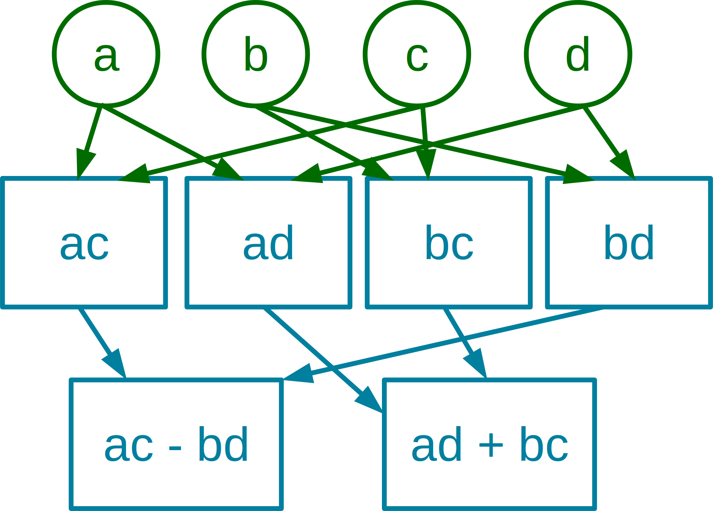
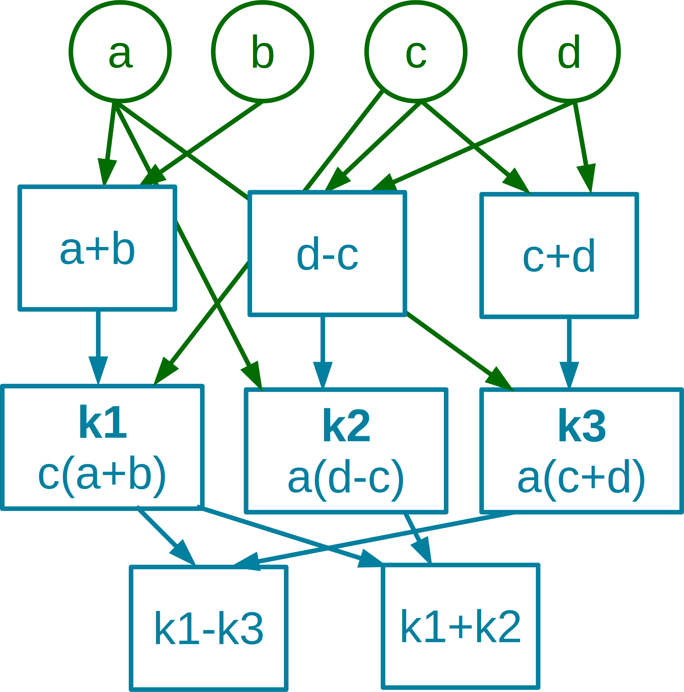

{{ title }}
Complex numbers have a wide range of applications including the previously discussed Fourier transform. This article doesn't aim to be an introduction for complex numbers, but rather discuss the various representations of them. I'm not going deep into the cubic equatations and the problems with the formulas discovered for it, but a quick rundown does not hurt:
- First, the need arised to express the square root of negative numbers, which were previously thought to be impossible. These were imaginary numbers and squaring one yielded a negative real number back. Also it is worth mentioning that an imaginary number corresponded to each negative real number and vice versa.
- We wanted to keep these new numbers as compatible with our old systems as we could, so we could make some rearrangments: {{ formula("def_rearrange.tex") }}
- Finally we could combine real and imaginary numbers to get complex numbers: {{ formula("def_34.tex") }}
Now instead of keeping track of infinitely many imaginary numbers, we could reduce all of them to one, the simplest. Thus we defined j (or i as you prefer):
{{ formula("def_j.tex") }}Just to be clear, reals are a subset of complex numbers, so 1, 2 and 3 will be complex as well.
Basic operations
Complex numbers are defined by their real and imaginary parts. We can also represent them in a coordinate system, where the x axis represents the real part and y is imaginary.
Addition between two complex numbers is simple, just add their components independently, like you would do with vectors.
{{ code("complex_addition.c", "c") }}Substraction is pretty much the same:
{{ code("complex_substraction.c", "c") }}Things get sligtly complicated with multiplication. The trick here is that we have to multiply two imaginary numbers, and they yield a real one but with a negative sign. This is also much harder to interpret geometrically, so I didn't include that representation yet.
{{ code("complex_multiplication.c", "c") }} {{ formula("c_mul.tex") }}Before we continue, take a look at how many real operations did these functions cost. For addition and substraction we needed two additions and substractions respectively and for multiplication we had to do four real multiplications, one addition and one substraction.
We can do better in terms of multiplications, if we use Gauss' complex multiplication algorithm. With the introduction of three intermediate variables, we could reduce the number of multiplications needed to three:
{{ formula("c_mul_gauss.tex") }} {{ code("complex_gauss.c", "c") }}There are a few different ways to express this due to the symmetry but we can't go below three multiplications. Also we had to do now three additions and two substractions, a total of eight operations instead of six. Was this tradeoff really worth it?
It depends on your hardware, and you should take a look at the timings each operation takes (example). But as a general thumb of rule, we can make the following observations: addition and substraction cost the same, multiplication is slower and division is even slower.
| + - | |
| * | |
| / |
Also for now I'll refer substraction as addition to make things easier.
Finally we need to do some work to get the division done:
{{ formula("c_div_1.tex") }}After expanding the fraction (with the complex conjugate), the imaginary terms from the denominator cancel themselves.
{{ formula("c_div_2.tex") }}Rearranging the terms:
{{ formula("c_div_3.tex") }}And in code form:
{{ code("complex_division.c", "c") }}This method uses three additions, six multiplications, and two divisions. Not the fastest method, can we make some accelerations here as well?
As a side note, two of the six multiplications are squarings, which can be a little bit faster than regular multiplications.
Only a bit, with complex division, there is some sort of complex multiplication occuring, and we can bring down its four multiplications to three:
{{ code("complex_fast_division.c", "c") }}This method does 6 additions, 5 multiplications and 2 divisions.
Polar form
We can also rewrite our complex numbers into polar coordiantes. Instead of representing them with real and imaginary values, we can define a length and angle for each complex number:
We can present this new form with sines and cosines:
{{ formula("polar_def.tex") }}Where r and θ can be obtained from (using atan2 here):
{{ formula("polar_rtheta.tex") }}And we can use Euler's formula to simplify our notation and this allows for the use of nice exponentional identities.
{{ formula("polar_euler.tex") }}You are probably already familiar with this. The emphasis in this article is on how can this form used to accelerate our computations. The good news is that complex multiplication becomes really simple, it only takes one real multiplication and one addition:
{{ formula("polar_mul.tex") }}Also the division simplifies as well to one real division and one substraction:
{{ formula("polar_div.tex") }}Cool, now what about addition? The bad news is that you can't really do that withoud converting back to rectangular form. And this conversion really takes its toll: two squarings, a square root, an arctangent one way, sines and cosines with multiplications backwards. These operations are usually much slower than the regular arithmetic ones, so in practice where you have to do additions as well, this form is rarely used.
If you happen to have a use case where lots of repeated complex multiplications take place without any additions meanwhile, this might be useful, but otherwise you are better off with the regular form.
SIMD
There are other things to consider when evaluating performance, and one of them is parallelization. For addition and substraction it is easy to see, that the real and imaginary parts are independent from each other, and so they can be calculated concurrently. For multiplication, this is not so trivial. The naive version with four multiplications has a concurrency diagram with depth two:
Whereas the similar diagram for Gauss' method is one step deeper:
In conclusion: if we have four multiplier units available, we can do multiplication in only two steps. We can use the single instruction, multiple data (SIMD) extensions in x86 to accomplish something like that. The following code loads the four floats into a single 128 bit register specifically designed for vector operations (4 times sizeof(float), which is 32 equals to 128), then breaks them into two regiters. Both contains the original complex numbers, but in a redundant manner, the variable names aabb and cdcd indicate how they are stored. Of course this shuffling is redundant, if you can load the values into the registers this way in the first place.
The key method is the multiplication, for which SSE provides a single instruction that does elementwise multiplication. The remaining addition and substraction is done by hand, which is a pretty ugly way, but SIMD operations were not designed with horizontal (inter-register) operations in mind.
{{ code("simd_one.c", "c") }}We can eliminate these manual operations, if we use the ADDSUBPS instruction, which computes addition and substraction in an alternating manner alongside the vector. The fully utilize the 128 bit registers, we can process two complex multiplications instead of just one. This requires an additional SIMD multiplication, but hey, this tradeoff seems nice:
{{ code("simd_two.c", "c") }}And finally we can simply use the raw capabilities of parallelization and use the registers, as they were regular floats. Process 4 complex multiplications at the same time the naive way:
{{ code("simd_four.c", "c") }}I then benchmarked them on my Intel Core i5-4590S for 100 million iterations, and the results were somewhat interesting:
| Method | 100M iterations | 400M numbers |
|---|---|---|
| Manual add | 1.642s | 6.502s |
| Two at the same time | 1.912s | 3.845s |
| Four at the same time | 2.377s | 2.377s |
From the first two columns, the first method seemed the fastest. BUT if we factor in that the last method did process four times as much numbers as the first one, it paints a much different story. Seems like no clever tricking can accelerate the process this way. I also tried Gauss' method and the FMA instruction set for even less instructions, but they yielded the same results as the naive method.
Endnote
This introduction is far from complete, there are a lot of topics not covered here, complex numeral systems for example. You can also play around with these methods, and who knows, maybe you can find a more optimized complex multiplication or division method.
Sources
- Aleksandr Cariow, An algorithm for dividing two complex numbers (arXiv)
- Intel® 64 and IA-32 Architectures Optimization Reference Manual